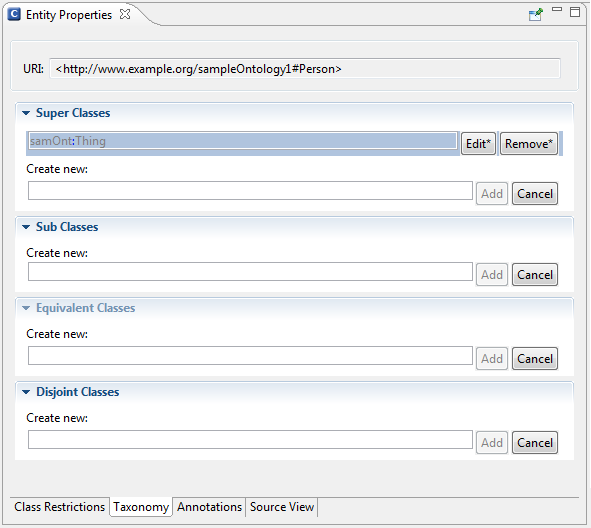
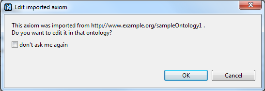
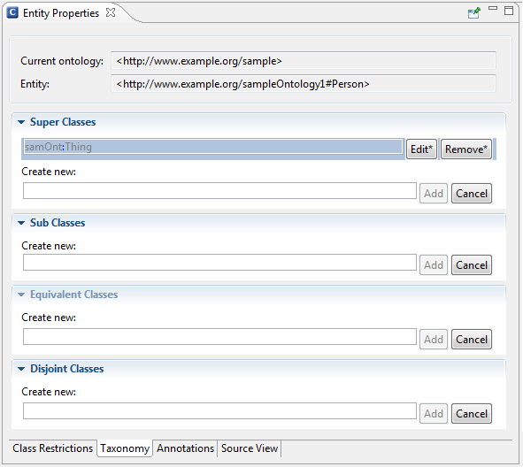

The Entity Properties panel allows you to edit and remove entity(axiom) of an imported ontology remotely. Visually it is marked with a star at the edit and remove buttons, if the source of this entity(axiom) is an imported ontology.
The functionality will be shown on an example:

In the description area of the Entity Property panel you can optional display the URI of the current ontology additional the URI of the selected entity (see picture below). This Option can be set in the General group on the main NeOn Toolkit site in the Preferences.
